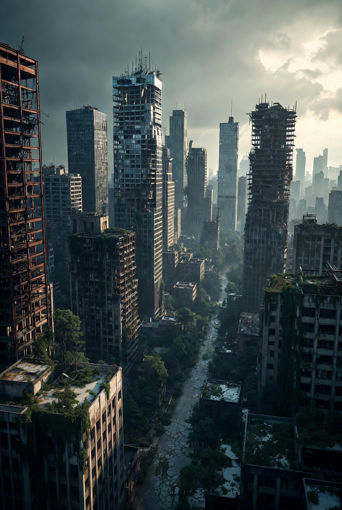
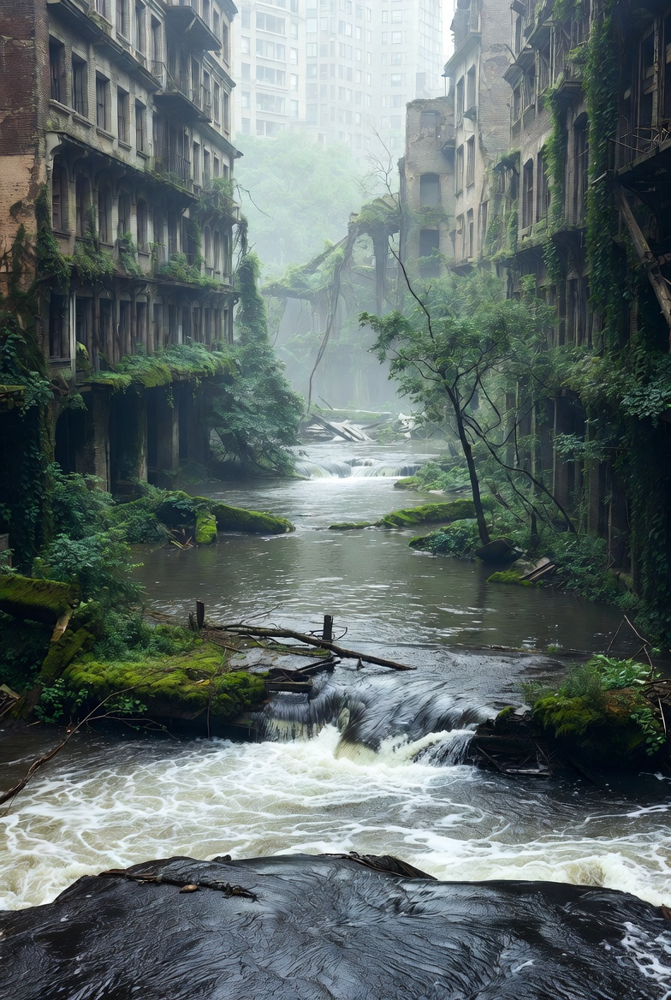

Visual Moodboard
A collection of visual references that shaped the aesthetic, colour palette, and atmosphere of the project.
How to add your moodboard images
Save your reference images into the images/ folder, then replace the src values below with your filenames (e.g. ../images/mood-1.jpg). The first image spans 2 columns and 2 rows automatically.

Urban decay atmosphere

Nature reclaiming

Rusted technology

Water reclaiming city

Overgrown street
Add image
Replace src with your filename
Add image
Replace src with your filename
Add image
Replace src with your filename
Colour palette notes: The project uses deep blacks (#09090a), muted greens (#5a9468 / #7dbf8e), and off-white text (#dde4dd). Imagery is desaturated and darkened to maintain atmosphere. Fonts are Bebas Neue (headings) and Barlow (body).